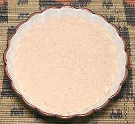

 |
Shiro Powder, MittenAfrica: Ethiopia, Eritrea - Mitten Shiro | ||||
| Makes: Effort: Sched: DoAhead: |
3/4 cup ** 15 min Yes |
Shiro powder is a very important in Ethiopia and Eritrea, as basis for tasty and nutritious stews, generally spooned onto a sheet of Injera. | |||
|
3/4 ----- 1 1/2 1/2 1/2 ----- |
c ----- T t t t ----- |
Chickpea Flour (1) -- Spices Berbere Spice (2) Cardamom Seeds (3) Nigella Seeds Ajwain Seeds ------------ |
Make - (5 to 10 min)
|